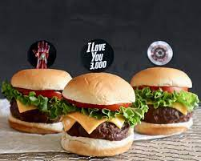
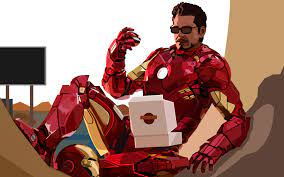

Ironman
Iron Man Burger Stark Industries Special Sauce-
 
Ingredients
For the Burger
- 1 pound ground beef (or your choice of protein)
- Salt and pepper to taste
- 4 burger buns
- 4 lettuce leaves
- 4 tomato slices
- 4 slices of cheddar cheese
- 1 red onion, thinly sliced
- Olive oil for cooking
For the Stark Industries Special Sauce
- 1/2 cup mayonnaise
- 2 tablespoons ketchup
- 1 tablespoon sweet relish
- 1 teaspoon Dijon mustard
- 1 teaspoon Worcestershire sauce
- 1/2 teaspoon garlic powder
- Salt and pepper to taste
Instructions:
- Prepare the Stark Industries Special Sauce:
In a bowl, combine the mayonnaise, ketchup, sweet relish, Dijon mustard, Worcestershire sauce, garlic powder, salt, and pepper. Mix well until all ingredients are thoroughly combined. Set the sauce aside.
Shape and Cook the Burgers:
- Preheat a grill or stovetop pan over medium-high heat.
- Divide the ground beef into 4 equal portions. Shape each portion into a patty and season both sides with salt and pepper.
- Drizzle a bit of olive oil onto the grill or pan to prevent sticking. Cook the patties for about 3-4 minutes on each side, or until they reach your desired level of doneness.
- In the last minute of cooking, place a slice of cheddar cheese on each patty to melt.
- Assemble the Iron Man Burgers:
- Toast the burger buns on the grill or in a toaster until lightly golden.
- Spread a generous amount of the Stark Industries Special Sauce on the bottom half of each bun.
- Place a lettuce leaf on top of the sauce.
- Place the cooked cheeseburger patty on top of the lettuce.
- Top the patty with a slice of tomato and some thinly sliced red onion.
- Serve:
- Place the top half of the bun over the toppings to complete the burger.
- You can use toothpicks with Iron Man-themed decorations to hold the burgers together if desired.
Serve the Iron Man burgers with a side of crispy fries and a chilled Coca-Cola.
Coca-Cola Beverage:
To complement your Iron Man burger, open a cold Coca-Cola and pour it into a glass filled with ice. The refreshing and fizzy Coca-Cola will be the perfect beverage to enjoy alongside your superhero-inspired burger.
Enjoy your Iron Man-themed burger and Coca-Cola meal, and feel like a hero while indulging in this delicious treat!😍😍😍😍
About Ironman -You cant afford me